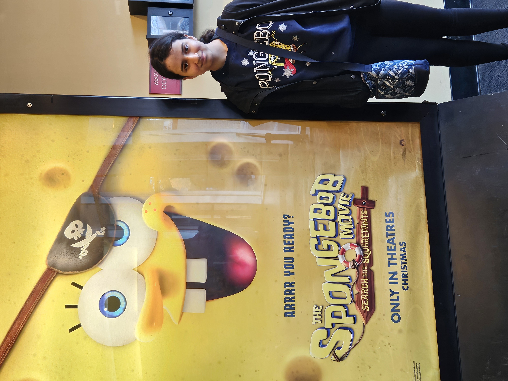

About Me

This is an image of me going to see the newest spongebob movie over winter break. Spongebob Fan For Life!
About Me
Hi! My name is Layla Green and I am currently a Senior at Marlboro High School, going to Monmouth University in the Fall. I come from Manhattan New York and I moved to New Jersey in July of 2021. I have a pet cat named Britney who is a tuxedo cat. I love listening to music, my favorite artist is Harry Styles. I love movies and TV shows, with my favorites being The Pirate with Gene Kelly and Judy Garland, and Arrested Development. I consider myself to be kind, loyal, kinda funny, and reserved.
Interest and Hobbies

Movies and TV Shows
I love watching movies and TV shows, my niche with movies is old movies from the 40's and 50's, with my favorite actor being Gene Kelly. With TV shows and Movies I watch a lot of different things but I really like comedies, romantic comedies, and documentaries. Right now I am watching Jackass.